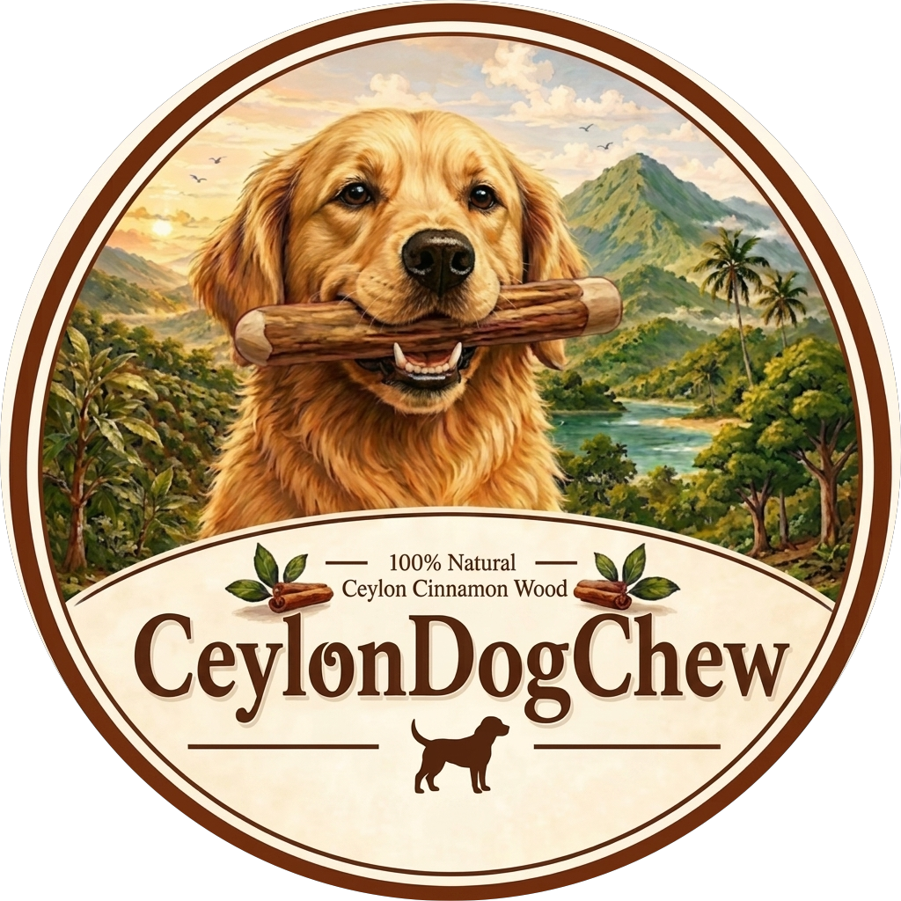

Our Product
Handcrafted from Cinnamomum verum trees, after the precious cinnamon bark is harvested, the sticks remain as waste and for heating. Not a single tree is cut down for our product. Our chews are dried, cleaned, and quality-checked entirely by hand — no big machines, no chemicals, no compromise.
Request B2B SamplesWhat's Inside
Only one main ingredient – wood from true Ceylon Cinnamon (Cinnamomum verum) from verified farmers.
Product Specifications
We work with pet-shop distributors, eco-retailers, and specialty online stores worldwide. Flexible quantities, personalised packaging, and reliable export logistics.
Usage Guidelines
An hour a day is enough: Let your dog enjoy the chew for about an hour daily, and always keep an eye on them just to be safe.
Watch out for small pieces: Clean up any small fragments that might break off right away to avoid any choking hazard.
Strength & Safety: Ceylon cinnamon wood practically doesn't splinter, but it's still 100% natural. If your dog has an extra strong bite and manages to break the stick, it's best to replace it right away.
Regular Replacement: For the ultimate experience of full flavor and intense aroma, we recommend getting a new stick every 3 months.
Order info